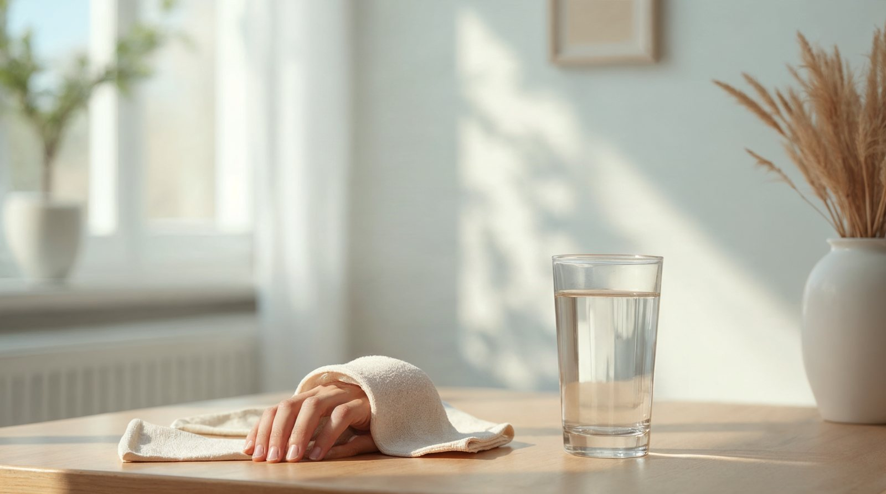
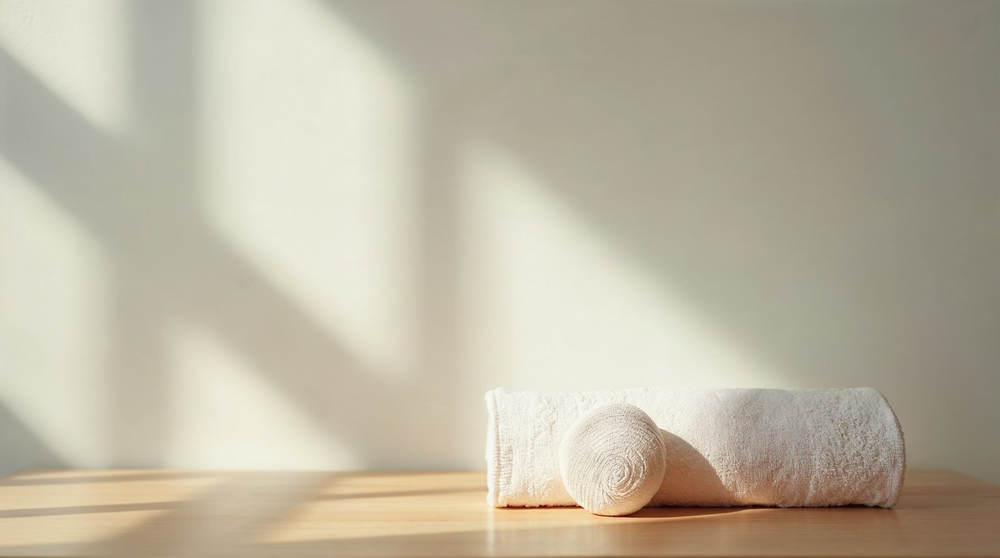
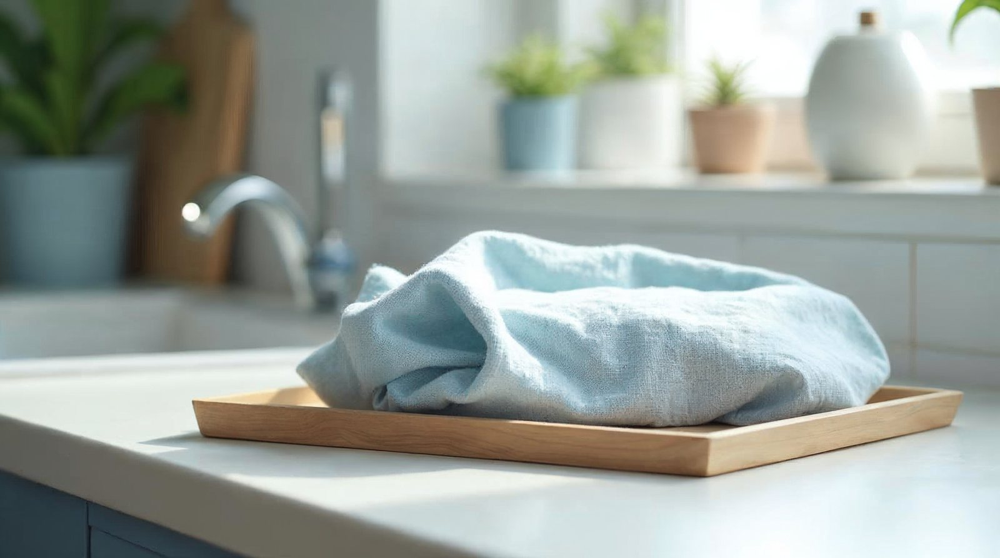
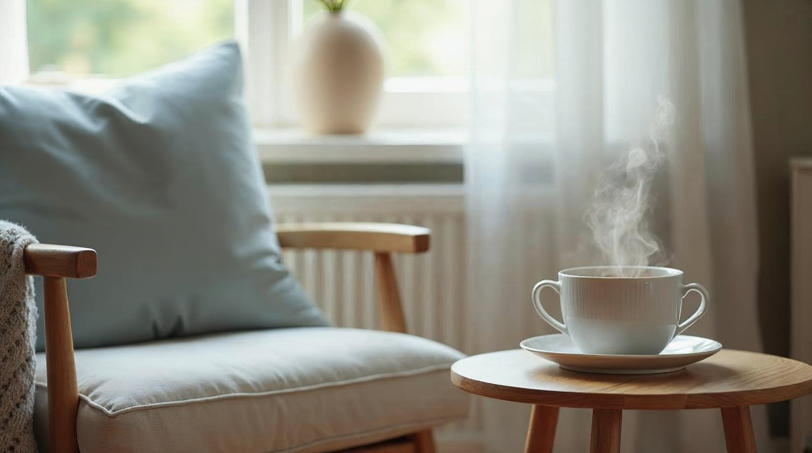

이종호 한의사 감수좋은꿈참사랑한의원 대표원장 (한의사 면허번호 19769)발행 2026-11-26 · 수정 2026-11-26
이 글의 차례
젖은 계단에서 발이 미끄러지는 순간, 몸은 생각보다 먼저 손을 뻗습니다. 손바닥으로 바닥을 짚고 넘어진 뒤 일어나 보면 크게 다친 것 같지는 않은데, 저녁이 되자 손목이 부어오르고 문고리를 돌릴 때마다 시큰합니다.
손목을 삐는 일은 생각보다 흔합니다. 넘어지며 손을 짚을 때, 무거운 냄비를 한 손으로 들다 손목이 꺾일 때, 운동하다 공에 손이 젖혀질 때처럼 일상 곳곳에 계기가 있습니다. 대부분은 시간이 지나며 가라앉지만, 몇 주가 지나도 특정 동작에서 계속 시큰하다는 분도 적지 않습니다.
진료실에서 손목을 다치신 분의 맥을 짚으며 제가 가장 먼저 여쭙는 것은 다친 그 순간입니다. 손바닥 쪽으로 짚었는지, 손등 쪽으로 꺾였는지, 비틀렸는지에 따라 다친 자리가 달라지고 살펴볼 방향도 달라지기 때문입니다.
오늘은 손목 염좌가 어떤 상태인지, 뼈가 다친 경우와는 어떻게 구분해 보는지, 첫 며칠과 그 뒤를 어떻게 지내면 좋은지, 그리고 한의원에서는 무엇을 함께 살피는지 말씀드려 보겠습니다.

손목 염좌는 어떤 상태인가요?
손목은 작은 뼈 여덟 개와 팔뚝의 뼈 두 개가 촘촘하게 맞물린 관절입니다. 이 뼈들을 서로 붙잡아 주는 것이 인대라는 질긴 끈인데, 손목이 갑자기 지나치게 꺾이거나 비틀리면 이 인대가 늘어나거나 일부가 찢어질 수 있습니다. 이것을 손목 염좌, 흔히 손목을 삐었다고 말합니다.
염좌는 정도에 따라 나누어 봅니다. 인대가 살짝 늘어나 붓기와 시큰함만 있는 가벼운 경우, 일부가 찢어져 붓기와 멍이 뚜렷하고 힘을 주기 어려운 경우, 인대가 크게 끊어져 손목이 헐겁게 느껴지는 경우가 있습니다. 가벼운 경우가 가장 흔하지만, 처음에는 그 정도를 겉으로 구분하기 쉽지 않습니다.
손목은 하루에도 수백 번 움직이는 관절이라 다친 뒤에도 쉬게 두기가 어렵습니다. 그래서 다친 인대가 다 아물기 전에 다시 쓰다 보면, 시큰함이 몇 주씩 이어지는 경우가 생깁니다.
왜 손목은 쉽게 삐고, 오래 시큰할까요
넘어질 때 손을 짚는 것은 몸을 지키려는 자연스러운 반응입니다. 그 순간 몸무게가 손바닥 하나에 실리면서 손목이 뒤로 크게 젖혀지고, 손목 안의 인대가 한꺼번에 당겨집니다. 손목 염좌의 상당수가 이렇게 생깁니다.
- 빙판길이나 젖은 바닥에서 미끄러지며 손을 짚을 때
- 자전거나 킥보드를 타다 넘어질 때
- 무거운 냄비나 상자를 손목만으로 비틀어 들 때
- 배구, 농구, 볼링처럼 손목이 갑자기 젖혀지는 운동을 할 때
- 아이를 안다가 아이가 갑자기 몸을 틀 때
다친 뒤 오래 시큰한 데에도 이유가 있습니다. 붓기가 빠졌다고 바로 무거운 일을 다시 하거나, 손목을 아끼느라 아예 움직이지 않아 주변 근육과 힘줄이 굳어 버리는 경우입니다. 너무 쓰는 것도, 너무 안 쓰는 것도 회복을 더디게 만듭니다.
한 번 다친 손목을 다시 짚고 넘어지거나 비슷한 동작을 반복하면, 아물던 인대가 또 늘어나면서 시큰함이 길어지기도 합니다. 그래서 회복 중에는 손목을 지켜 주는 생활 습관을 함께 챙기는 것이 중요합니다.
한의학에서는 다친 자리에 어혈이 머물고 기혈이 잘 흐르지 못하는 모습으로 봅니다. 그래서 처음에는 붓기와 열감을 가라앉히는 데, 시간이 지난 뒤에는 굳은 흐름을 풀고 움직임을 되찾는 데 초점을 둡니다.
뼈가 다친 경우와는 어떻게 구분하나요?
손을 짚고 넘어진 뒤에는 인대만이 아니라 뼈가 다쳤을 가능성도 함께 생각해야 합니다. 특히 엄지 아래 손목뼈나 팔뚝 뼈 끝은 넘어질 때 금이 가기 쉬운 자리입니다.
- 손목이 눈에 띄게 휘어 보이거나 모양이 달라진 경우
- 엄지 뿌리 아래 오목한 자리를 누르면 콕 찌르듯 아픈 경우
- 붓기나 멍이 심하거나, 손가락을 움직이기도 어려운 경우
- 며칠이 지나도 아픔이 줄지 않고 오히려 심해지는 경우
이런 경우에는 정형외과에서 엑스레이를 먼저 찍어 보시길 권해 드립니다. 엄지 아래 작은 손목뼈는 처음 사진에서 잘 보이지 않는 경우도 있어서, 아픔이 이어지면 다시 확인하는 경우도 있습니다. 뼈에 이상이 없다는 확인을 받은 뒤 한의원 진료를 함께 하셔도 됩니다.
손목 바깥쪽, 새끼손가락 쪽이 계속 시큰하다면 손목 안쪽의 연골 구조가 함께 다쳤을 수도 있습니다. 엄지 쪽 힘줄이 붓는 건초염과 헷갈리는 경우도 있어서, 아픈 자리를 정확히 짚는 것이 구분의 출발점입니다.
손목을 다친 뒤 손가락 끝이 저리다면 손목 안을 지나가는 신경이 붓기에 눌린 것일 수도 있습니다. 저림이 있다면 진료실에서 꼭 말씀해 주세요.
아이와 어르신의 손목은 조금 더 꼼꼼히 봅니다
아이들은 뼈가 자라는 자리가 아직 열려 있어서, 어른이라면 인대가 늘어날 충격에도 뼈의 끝부분이 다칠 수 있습니다. 아이가 손목을 감싸 쥐고 쓰지 않으려 하거나, 하루가 지나도 그 손으로 물건을 잡지 않으려 한다면 엑스레이로 먼저 확인해 보시길 권해 드립니다.
연세가 드신 분들은 뼈가 약해져 있는 경우가 많아서, 가볍게 넘어져도 팔뚝 뼈 끝에 금이 가기 쉽습니다. 겉으로는 붓기만 조금 있어 보여도 속은 다를 수 있으니, 짚고 넘어진 뒤라면 사진으로 한 번 확인하고 시작하는 편이 마음이 편합니다.
평소 손목을 많이 쓰는 일을 하시는 분이라면 회복 기간을 조금 넉넉하게 잡으시는 것이 좋습니다. 일터로 돌아가는 시점을 정할 때도 손목이 어느 동작까지 편한지를 기준으로 함께 의논합니다.
다친 뒤 첫 며칠은 이렇게 지내세요
다친 직후 하루 이틀은 붓기와 열감을 가라앉히는 것이 우선입니다. 이 시기의 몸은 다친 자리로 피와 물을 모아 회복을 시작하는데, 이 반응이 지나치면 붓기와 아픔이 커집니다.
- 얼음주머니를 수건에 싸서 15분 정도 대었다가 떼기를 몇 번 반복하기
- 앉거나 누울 때 손을 심장보다 조금 높게 올려 두기
- 손목에 무리가 가는 무거운 일, 비트는 동작은 잠시 쉬기
- 손가락은 아프지 않은 범위에서 가볍게 쥐었다 펴기
- 반지나 팔찌는 붓기 전에 미리 빼 두기
압박 붕대나 손목 보호대는 붓기를 줄이고 손목을 덜 쓰게 하는 데 도움이 됩니다. 다만 손끝이 저리거나 색이 변할 만큼 꽉 조이면 안 되고, 잘 때는 조금 느슨하게 풀어 두세요.
뜨거운 찜질이나 사우나, 술은 붓기가 가라앉기 전까지는 미루시는 편이 좋습니다. 처음 며칠은 차갑게, 붓기와 열감이 가라앉은 뒤에는 따뜻하게라고 기억해 두시면 됩니다.

붓기가 빠진 뒤에는 조금씩 움직여 주세요
붓기가 가라앉고 나면 손목을 다시 쓰는 연습이 필요합니다. 오래 아껴 둔 손목은 주변 근육이 약해지고 관절이 굳어서, 다친 인대가 아문 뒤에도 뻣뻣하고 시큰한 느낌이 남을 수 있습니다.
처음에는 따뜻한 물에 손을 담그고 손목을 천천히 굽혔다 젖히기, 좌우로 기울이기, 손바닥을 위아래로 뒤집기를 아프지 않은 범위에서 해 보세요. 한 방향에 10번 정도, 하루 두세 번이면 충분합니다. 깁스를 했거나 골절·수술 치료를 받은 뒤라면 담당 병원에서 움직여도 된다고 한 뒤에 시작하세요.
그다음에는 부드러운 공이나 수건을 쥐었다 펴며 쥐는 힘을 되찾아 갑니다. 무거운 물건을 드는 일은 맨 마지막 단계입니다. 생수병 하나를 들 때 시큰하지 않은지 확인하고, 조금씩 무게를 늘려 가세요.
움직임 연습을 한 뒤 시큰함이 30분 안에 가라앉는다면 적당한 정도입니다. 다음 날까지 붓거나 아프다면 강도를 한 단계 낮추세요.
먼저 이렇게 여쭙니다
처음 오시면 저는 대략 이런 순서로 여쭙니다. 미리 생각해 오시면 이야기가 훨씬 수월해집니다.
- 언제, 어떤 자세로 다치셨나요? 손바닥으로 짚었나요, 손등 쪽으로 꺾였나요?
- 다친 직후 붓기와 멍은 어땠고, 지금은 어떤가요?
- 손목의 어느 쪽을 누르면 가장 아픈가요?
- 문고리 돌리기, 병뚜껑 열기, 바닥 짚고 일어나기 중 어떤 동작이 힘든가요?
- 엑스레이나 다른 검사를 받으셨나요? 결과는 어땠나요?
- 손가락이 저리거나 감각이 둔한 느낌이 있나요?
- 일이나 집안일에서 손목을 얼마나 많이 쓰시나요?
손목을 많이 쓰는 일을 하시는 분일수록 회복 기간 동안 어떻게 일을 나누어 할지 함께 의논합니다. 아예 쓰지 않을 수 없다면, 덜 부담되는 방법을 찾는 것이 현실적인 첫걸음입니다.

일상에서 먼저 해 볼 수 있는 것
- 무거운 것은 손목을 곧게 편 채 두 손으로, 몸 가까이 붙여 들기
- 병뚜껑이나 수건 짜기처럼 비트는 동작은 다른 손을 함께 쓰기
- 바닥을 짚고 일어설 때는 손바닥 대신 주먹을 쥐고 짚기
- 오래 타자를 칠 때는 손목 아래 받침을 두고 손목을 곧게 두기
- 아침에 손목이 뻣뻣하면 따뜻한 물에 손을 담그고 천천히 움직이기
- 다시 운동을 시작할 때는 보호대를 차고 가벼운 강도부터
손목 보호대는 회복 초기에 도움이 되지만, 몇 주 넘게 계속 차고 지내면 오히려 주변 근육이 약해질 수 있습니다. 무거운 일을 할 때만 차고, 쉬는 시간에는 풀어 두는 식으로 점점 줄여 가시길 권합니다.
한의원에서 함께 살필 수 있는 경우
- 엑스레이에서 뼈는 괜찮다고 했는데 몇 주째 시큰한 경우
- 붓기는 빠졌지만 손목을 끝까지 젖히거나 돌리기 어려운 경우
- 날이 궂거나 손을 많이 쓴 날 손목이 다시 묵직해지는 경우
- 손목을 아끼느라 팔꿈치나 어깨까지 함께 뻐근해진 경우
- 다친 뒤 같은 손목을 자주 다시 접질리는 경우
좋은꿈참사랑한의원에 오시면 맥부터 짚으며 다친 순간과 그 뒤의 변화, 잠을 여쭙습니다. 그다음 손목 주변을 직접 눌러 보며 아픈 자리와 움직임이 막히는 방향을 확인하고, 손목을 아끼느라 굳은 팔꿈치와 어깨도 함께 봅니다.
진찰한 내용을 바탕으로 침, 약침, 온열 관리 가운데 지금 회복 단계에 맞는 것을 고르고, 집에서 할 움직임 연습을 함께 정합니다. 붓기와 멍이 오래가거나 몸이 차고 회복이 더디다면 한약 상담을 드리기도 하는데, 드시는 약을 먼저 확인하고 신중하게 정합니다.
정형외과에서 보호대나 깁스, 약을 처방받으셨다면 그 지시는 그대로 따라 주세요. 깁스를 풀거나 보호대를 줄이는 시점도 처방한 선생님의 안내를 우선합니다. 한의원 진료는 그 과정과 나란히 가는 것입니다. 임신 중이시라면 진료 전에 먼저 알려 주시고, 필요하면 산부인과와 상의하시도록 안내합니다.
이렇게 기록해 오시면 상담이 쉬워집니다
- 다친 날짜와 그때의 자세(손바닥 짚음, 손등 꺾임, 비틀림)
- 붓기와 멍이 가장 심했던 날과 빠지기 시작한 날
- 시큰한 동작 목록(문고리, 병뚜껑, 바닥 짚기, 타자 등)
- 엑스레이 등 검사 결과지나 사진
- 얼음찜질, 보호대처럼 해 본 것과 그 뒤의 느낌
이렇게 정리해 오시면 회복이 어디쯤 와 있는지 훨씬 정확하게 함께 볼 수 있습니다. 아픈 자리를 사진으로 찍어 두셔도 붓기의 흐름을 보는 데 도움이 됩니다.

손목이 다시 믿음직해지기까지
손목 염좌는 대개 시간이 지나며 가라앉지만, 그 시간을 어떻게 보내느냐에 따라 회복의 모양이 달라집니다. 처음에는 쉬게 해 주고, 붓기가 빠지면 조금씩 움직이고, 마지막에 힘을 되찾는 순서를 지키는 것이 무엇보다 중요합니다.
회복이 더디게 느껴지는 날도 있습니다. 어제보다 조금 더 젖혀지는지, 병뚜껑을 열 때 덜 망설여지는지처럼 작은 변화를 알아차려 보세요. 그런 변화가 쌓이다 보면 손목을 덜 의식하며 지내는 날도 늘어날 수 있습니다.
이번 주에는 비트는 동작을 다른 손과 나누어 하는 습관 하나만 골라 보세요. 다음에 오시면 손목이 어느 방향까지 편하게 움직이는지 함께 확인해 보겠습니다.
이런 증상은 먼저 확인이 필요합니다
- 손목 모양이 눈에 띄게 달라졌거나, 붓기가 심하거나, 엄지 아래 손목뼈를 누르면 심하게 아픈 경우
- 손가락이 하얗거나 차갑게 변하거나, 저림·감각 저하가 점점 심해지는 경우
이런 신호가 있으면 한의원보다 가까운 병원이나 응급실을 먼저 찾으세요.
함께 읽으면 좋은 글
- 정형외과·물리치료를 다녀도 손목 통증이 오래갈 때, 상담에서 무엇을 같이 짚어 보나요?
- 아기를 안거나 휴대폰을 쥘 때 엄지 쪽 손목이 찌릿한 드퀘르뱅 건초염은 어떻게 살피나요?
- 발목을 자주 접질리는 반복 발목 염좌와 발목 불안정은 어떻게 살피나요?
- 아이가 눈썰매나 스케이트를 타다 넘어져 손목을 아파하면 무엇부터 확인하나요?
- 새벽에 손이 저려 깨는 손목터널증후군은 어떻게 살피나요?

여쭙는 것
- 언제, 어떤 자세로 다치셨나요? 손바닥으로 짚었나요, 손등 쪽으로 꺾였나요?
- 다친 직후 붓기와 멍은 어땠고, 지금은 어떤가요?
- 손목의 어느 쪽을 누르면 가장 아픈가요?
생활에서 해 볼 것
- 무거운 것은 손목을 곧게 편 채 두 손으로, 몸 가까이 붙여 들기
- 병뚜껑이나 수건 짜기처럼 비트는 동작은 다른 손을 함께 쓰기
- 바닥을 짚고 일어설 때는 손바닥 대신 주먹을 쥐고 짚기
한의원에서 함께 살필 것
- 엑스레이에서 뼈는 괜찮다고 했는데 몇 주째 시큰한 경우
- 붓기는 빠졌지만 손목을 끝까지 젖히거나 돌리기 어려운 경우
- 날이 궂거나 손을 많이 쓴 날 손목이 다시 묵직해지는 경우
먼저 확인이 필요한 신호
- 손목 모양이 눈에 띄게 달라졌거나, 붓기가 심하거나, 엄지 아래 손목뼈를 누르면 심…
- 손가락이 하얗거나 차갑게 변하거나, 저림·감각 저하가 점점 심해지는 경우
한눈에 보는 표
| 구분 | 핵심 |
|---|---|
| 여쭙는 것 | 언제, 어떤 자세로 다치셨나요? 손바닥으로 짚었나요, 손등 쪽으로 꺾였나요? 다친 직후 붓기와 멍은 어땠고, 지금은 어떤가요? |
| 생활에서 해 볼 것 | 무거운 것은 손목을 곧게 편 채 두 손으로, 몸 가까이 붙여 들기 병뚜껑이나 수건 짜기처럼 비트는 동작은 다른 손을 함께 쓰기 |
| 한의원에서 함께 살필 것 | 엑스레이에서 뼈는 괜찮다고 했는데 몇 주째 시큰한 경우 붓기는 빠졌지만 손목을 끝까지 젖히거나 돌리기 어려운 경우 |
| 먼저 확인이 필요한 신호 | 손목 모양이 눈에 띄게 달라졌거나, 붓기가 심하거나, 엄지 아래 손목뼈를 누르면 심하게 아픈 경우 손가락이 하얗거나 차갑게 변하거나, 저림·감각 저하가 점점 심해지는 경우 |
자주 묻는 질문
손목을 삐었을 때 찜질은 차게 하나요, 따뜻하게 하나요?
다친 직후 붓고 열감이 있는 하루 이틀은 차게 하시고, 붓기와 열감이 가라앉은 뒤에는 따뜻하게 해서 굳은 손목을 풀어 주는 편이 좋습니다.
엑스레이에서 이상이 없다는데 왜 계속 아픈가요?
엑스레이는 주로 뼈를 보는 검사라서 인대나 힘줄의 상태는 따로 살펴야 합니다. 다친 인대가 아무는 데에는 몇 주가 걸릴 수 있고, 굳은 주변 근육 때문에 시큰함이 남기도 합니다.
손목 보호대는 계속 차고 있어야 하나요?
회복 초기와 무거운 일을 할 때는 도움이 될 수 있습니다. 다만 몇 주 넘게 계속 차면 주변 근육이 약해질 수 있어서, 쉬는 시간에는 풀어 두며 점점 줄여 가시길 권합니다.
다친 지 오래됐는데 지금 와도 진료가 의미가 있나요?
오래된 시큰함에는 굳은 근육과 줄어든 움직임이 얽혀 있는 경우가 많습니다. 진찰한 뒤 지금 상태에 맞는 진료와 움직임 연습을 함께 정해 드립니다.
손목이 아픈데 운동은 언제부터 다시 해도 되나요?
일상 동작에서 시큰함이 거의 없고 쥐는 힘이 돌아온 뒤 가벼운 강도부터 시작하시길 권합니다. 손목을 짚거나 젖히는 운동은 맨 마지막에 다시 시작하세요.
좋은꿈참사랑한의원은 재진 때 지난번 이야기부터 이어서 여쭙니다. 진료시간과 예약은 오시는 길에서 확인하세요.
어디서 상담받을 수 있나요?
좋은꿈참사랑한의원은 서울 동작구 만양로2길 2 신성빌딩 3층·5층(서울 동작구 상도동, 7호선 상도역 3번 출구 근처)에 있습니다. 한의사 3명(이종호 대표원장, 조영기 수석진료원장, 정원영 진료원장)이 진료합니다. 진료시간은 평일 09:30~20:00(점심 13:00~14:00), 토·일·공휴일 09:30~15:00이며, 방문 전 전화로 확인을 권합니다. 예약은 네이버 예약, 카카오톡 상담, 전화 02-815-7510로 받습니다.
이 글은 일반적인 건강 정보이며 개인의 진단이나 치료를 대신하지 않습니다. 증상이 있거나 복용 중인 약이 있다면 진료를 통해 확인하세요. 치료 효과는 개인마다 다를 수 있습니다.
작성 기준: 일반적으로 알려져 있는 건강 정보를 참고해 정리했습니다(대표원장 감수). 증상 기록은 1~2주 동안 하루 1회, 비슷한 시간에 적어 오시면 지난 상태와 비교하기 쉽습니다.